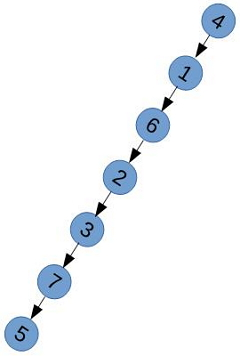
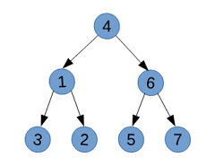

本文是笔者参加网易自虐团，学习《数据结构》课程第三周的成果帖。
由中序和先序遍历序列求后序遍历序列
何老师在视频中讲到：由先序和中序遍历序列可以来确定一棵二叉树，其方法如下：
- 根据先序遍历序列第一个结点确定根结点；
- 根据根结点在中序遍历序列中分割出左右两个子序列；
- 对左子树和右子树分别递归使用相同的方法继续分解。
根据此递归算法，求后序遍历序列，就可用代码写成以下形式：
1 2 3 4 5 6 7 8 9 10 11 12 13 14 15 16 17 18 19 20 21 22 23 24 25 26 27 28 29 30 31 32 33 34 35 36 37 38 39 40 41 42 43 44 | bool PreInOrder2PostOrder(int*, int*, int, int, int, int*); static int FindRoot(int*, int, int, int); bool PreInOrder2PostOrder(int* preorder, int* inorder, int p0, int i0, int n, int* postorder) { static int count = 0; int ri = FindRoot(inorder, preorder[p0], i0, n); if (ri != -1) { if (ri - i0 == 1) { postorder[count++] = inorder[i0]; } else if (ri - i0 > 1) { PreInOrder2PostOrder(preorder, inorder, p0 + 1, i0, ri - i0, postorder); } if (n - ri + i0 - 1 == 0) { postorder[count++] = inorder[ri]; } else { PreInOrder2PostOrder(preorder, inorder, p0 + ri- i0 + 1, ri + 1, n - ri + i0 - 1, postorder); postorder[count++] = inorder[ri]; } return true; } else { printf("The preorder and inorder sequences are not matched!\n"); return false; } } static int FindRoot(int* inorder, int root, int i, int n) { for (int j = i; j < i + n; ++j) if (inorder[j] == root) return j; return -1; } |
其中，preorder 和 inorder 分别是整个二叉树的前序遍历序列和中序遍历序列，p0 是当前处理的前序遍历序列的第一个元素在 preorder 中的索引，i0 是当前处理的中序遍历序列的第一个元素在 inorder 中的索引，n 是当前处理的前序（中序）遍历序列的长度，postorder 是返回的整个二叉树的后序遍历序列。
时间复杂度分析
我们来分析一下此递归算法的时间复杂度。
先来看看最坏情况——所有结点都只有左孩子：

如上图所示的二叉树，它的前序遍历序列为：
1 | 4 1 6 2 3 7 5 |
中序遍历序列为：
1 | 5 7 3 2 6 1 4 |
在第一步中，要在中序遍历序列中查找先序遍历序列的第一个结点，对于一般的二叉树，由于遍历序列是无序的，只能使用顺序查找的方法，故该查找操作的 T(n) = cn, 这对于最坏情况也是成立的。
在这种最坏情况下，每次都只能将中序遍历分割成左子序列，故时间复杂度满足下列递归方程：
1 2 3 4 5 | T(n) = T(n-1) + cn = T(n-2) + c(n-1) + cn = T(n-3) + c(n-2) + c(n-1) + cn = T(1) + 2c + 3c + ... + cn = O(n^2) |
再来看看平均情况——满二叉树：

上面满二叉树的前序遍历序列为：
1 | 4 1 3 2 6 5 7 |
中序遍历序列为：
1 | 3 1 2 4 5 6 7 |
每次查找，都要遍历一半的序列，然后将中序遍历序列平分为两半，故时间复杂度满足下列递归方程：
1 | T(n) = 2T(n/2) + cn/2 |
由 Master 定理，很容易得出 T(n) = O(nlogn).
空间复杂度分析
在上面的代码中，函数递归调用时，系统堆栈只需记住当前的 p0, i0, n 的值，故每一级递归调用的空间消耗是个与 N 无关的常量。
最坏情况下：
1 2 3 4 | S(n) = S(n-1) + c = S(n-2) + 2c = S(1) + (n-1)c = O(n) |
平均情况下：
1 | S(n) = 2S(n/2) + c |
由 Master 定理，容易得出 S(n) = O(n).
结论
- 该递归算法的时间复杂度在最坏情况下为 O(n^2), 平均为 O(nlogn).
- 该递归算法的空间复杂度为 O(n).
由中序和后序遍历序列求先序遍历序列
类似地，其方法描述如下：
- 根据后序遍历序列最后一个结点确定根结点；
- 根据根结点在中序遍历序列中分割出左右两个子序列；
- 对左子树和右子树分别递归使用相同的方法继续分解。
复杂度的情况也和前面是相同的。
层序遍历序列
关于层序遍历序列，引申出下列三个问题：
- 由层序和前序遍历序列能否唯一确定一个二叉树？
- 由层序和后序遍历序列能否唯一确定一个二叉树？
- 由层序和中序遍历序列能否唯一确定一个二叉树？
前两个问题的答案依然是：不能。第三个问题，我觉得能，但是没有想出一个好的适合于编程用的算法，求指导！
本作品由 Yysfire 创作，采用 进行许可。转载时请在显著位置标明本文永久链接：
进行许可。转载时请在显著位置标明本文永久链接：
http://yysfire.github.io/algorithm/Algorithm_and_its_complexity_analysis_to_convert_the_binary_tree_traversal_sequence.html